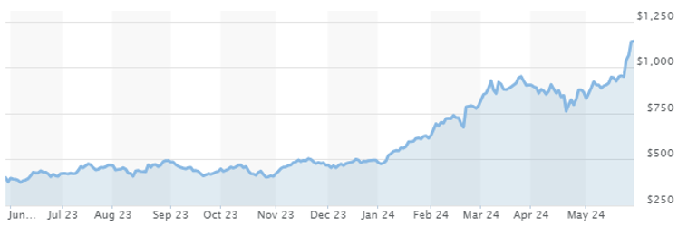

Stocks
Definition
Stocks are a type of investment that gives stockholders a share or partial ownership of ownership in that company. Investors can invest in common shares on the stock market or through private placement (a company that issues securities privately instead of publicly and may be able to be sold for a certain period). Some examples of Stock that you might know of include Walmart, Amazon, and Microsoft.
What are Stocks
Units of stock are called shares, which gives the investors a proportion of the company’s assets and profits depending on how many shares are invested. As an owner of stock, you share in the company or businesses success and failure (stock market increasing and decreasing). Unless stated, common shares give you the right to vote for the directors who will be elected for the board of directors and vote on significant corporate decisions.
Preferred Stocks typically don’t offer voting right but have a higher claim on assets and earnings than common stock, often fixed with dividends.
Dividends. Some companies pay out dividends, which are regular payouts to shareholders out of the company’s profits. Not all stocks pay dividends.
The only cost of investing in shares is the sale commission or paying a fee to your advisor if you have one.
Guarantee (Risk)
Stock is a medium to high-risk style investment, but it depends on what type of company you’re investing in, including the size, profitability, and financial stability and its basic economical standing. In general share price fluctuation is a risk, you will lose money if you sell at a lower value than what you bought the share at.
Return
There are only two ways to make money on shares including, getting dividends and/or selling your shares for a profit. Dividends can be paid in the form of cash or additional stock in the company. You will earn capital gains (earning money from a stock increase) if you sell your shares for more than what you paid for them, or capital losses if you must sell your shares at a lower price than what you bought them for.
Conclusion
Investing in stocks can be a way to grow your wealth over time, but it does require some basic understanding of market dynamics and being aware and prepared for the risk that comes with it.

- The Nvidia Corporation has increased by 186.27% in the last year and a yearly return of 36.8% over the last quarter century.